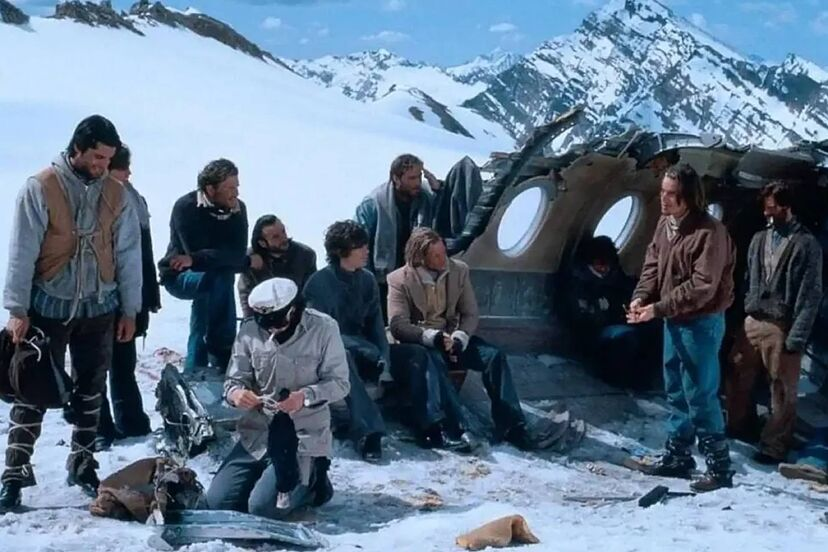
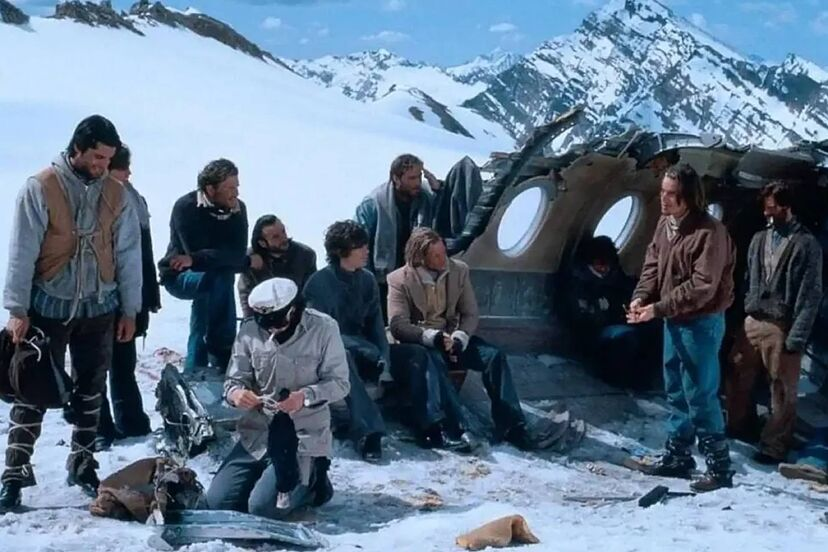

DIRECTOR
Jorge Sanjinés.

Jorge Sanjinés nació en la ciudad de La Paz el 31 de julio de 1936. Estudió filosofía en la Universidad Mayor de San Andrés. En 1957 decidió inscribirse en un curso de cine dictado en Concepción (Chile) y al final de este realizó un cortometraje. El cortometraje, de 2 minutos de duración, fue musicalizado por Violeta Parra, que entonces residía en esa ciudad. Entre 1958 y 1959, estudia en el Instituto Cinematográfico de la Pontificia Universidad Católica de Chile donde realiza tres cortometrajes: Cobre, El Maguito y La guitarrita. Retorna a Bolivia en 1961, al año siguiente conforma el Consejo Nacional de Cultura para el Cine y, entre 1965 y 1966, dirige el Instituto Cinematográfico Boliviano. Entre 1962 y 1965 realiza varios cortometrajes: Sueños y realidades (1962), Una jornada difícil (1963) y Revolución (1963), cortometraje de 10 minutos que recibió el Premio Joris Ivens 1964 en Leipzig. Filma también los mediometrajes Un día paulino, y ¡Aysa! (Derrumbe) (1964), la serie de cortos Bolivia avanza, El mariscal Zepita e Inundación (1965)
REPARTO
SINOPSIS
En medio de la Guerra del Chaco, Guillermo, un joven burgués, salva de morir a Sebastián, un campesino aymara. Con el tiempo, forjan una amistad. Guillermo se rebela contra su coronel por un comportamiento racista, es juzgado y condenado a la pena de muerte. Guillermo es ayudado a escapar y Sebastián lo acompaña en la huida en medio del Chaco boliviano. Durante el escape, se enfrentarán a las más duras condiciones del lugar, casi llegando a morir por falta de agua. Al llegar a una población, se separan yéndose por caminos opuestos y prometen volver a encontrarse.
MULTIMEDIA
imágenes y Video de la Pelicula Los Viejos Soldados
 
